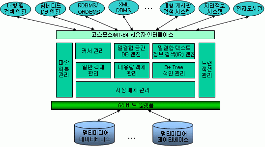

오디세우스/COSMOS는 텍스트 정보 검색 엔진과 밀결합(tight
coupling)된 정보 검색용 저장 시스템으로서, 각종 데이터베이스 시스템
및 응용 소프트웨어의 하부 구조로 사용되는 핵심 소프트웨어이다.
오디세우스/COSMOS는 데이터를 하드디스크에 저장하고
검색하는 부분을 운영체제가 지원하는 파일 시스템을 사용하지 않고
직접 관리하기 때문에 빠른 성능과 높은 보안성을 제공한다.오디세우스/COSMOS는
텍스트 뿐만 아니라 이미지, 비디오와 같은 멀티미디어 데이터를 효율적으로
저장 및 관리하고, 웹 사이트 검색 시스템, 인트라넷에서의 문서 검색
시스템, 논문 검색 시스템 등에서의 텍스트 내용 기반 검색을 빠르게
지원한다
오디세우스/COSMOS는 디스크를
관리하는 저장 매체 관리 모듈, 데이터를 객체 단위로 관리하는 일반
객체 관리 모듈, 멀티미디어 데이터와 같은 대용량 데이터를 관리하는
대용량 객체 관리 모듈, 효율적인 검색 지원을 위한 공간/비공간 색인
관리 모듈, 파손 회복 지원을 위한 파손 회복 관리 모듈, 트랜잭션 지원을
위한 트랜잭션 관리 모듈, 연속된 데이터 액세스를 빠르게 지원하기
위한 커서 관리 모듈, 지리정보시스템을 위한 공간 DB 엔진, 빠른 텍스트
정보 검색을 위한 텍스트 정보 검색 엔진, 그리고 편리한 사용을 위한
사용자 인터페이스로 구성된다. 특히 오디세우스/COSMOS는 최상의 텍스트
정보 검색 성능을 제공하기 위하여 데이터베이스 관리 기능과 텍스트
정보 검색 기능을 밀결합한 아키텍쳐를 제공한다. 다음은 오디세우스/COSMOS의
아키텍쳐를 나타낸 것이다.

 대용량
멀티미디어 객체 및 텍스트 정보에 대한 저장 및 검색에 탁월한 성능
대용량
멀티미디어 객체 및 텍스트 정보에 대한 저장 및 검색에 탁월한 성능
 최대 8 Exabyte(260) 크기의 대용량 객체 지원 최대 8 Exabyte(260) 크기의 대용량 객체 지원
데이터베이스 관리 기능과 텍스트 정보 검색
기능을 밀결합
가변길이
키, 다중 키, 중복 키를 지원하는 B+-트리 색인 제공
기존 B+-트리 알고리즘을 확장하여 중복 키와
가변길이 키를 지원
원시
디바이스 위에 구현한 파일 시스템
운영체제 버퍼를 통하지 않고 빠르게 디스크를
액세스
대용량
데이터베이스 지원
64 bit 플랫폼 지원
최대 32 Zetabyte(270)의 데이터베이스 볼륨 지원1
다수의 데이터베이스 볼륨을 동시에 사용하여
무한대에 가까운 대용량 데이터베이스를 지원
최대 32 Zetabyte(270)의 테이블 지원2
최대 8 Exabyte(260)의 레코드 지원
Bulkloading
기능 제공
100만건의 텍스트 정보 및 인덱스를 4시간 이내에
구축3 (문서당 8KByte 기준)
100만건의 비텍스트 정보 및 인덱스를 20분
이내에 구축4
Bulkdelete
기능 제공 (unique feature)
빠른 속도로 색인을 포함한 텍스트, 비텍스트
정보를 삭제
동적
수정 기능 제공
데이터베이스 변경 사항이 즉시 텍스트 정보
검색에 반영 (Immediate/Incremental Update)
텍스트 정보 검색이 바로 반영되므로 데이터베이스
변경을 위한 시스템 정지가 필요 없음
다중
서버 지원
다중 서버에서 Buffer Coherency 지원 (Volume
Lock 버전)
다중
사용자에 의한 동적 수정 지원
멀티쓰레드
기능 지원 (레코드 락 버전, 볼륨 락 버전)
동시성
제어 기능 제공
볼륨 락(Volume Lock - coarse granularity locking) 버전
 동시성 제어를 위한 락의 개수를 줄여 최적의
질의 처리 성능 및 데이터 관리 성능 발휘
동시성 제어를 위한 락의 개수를 줄여 최적의
질의 처리 성능 및 데이터 관리 성능 발휘
동시에 다수의 읽기 질의와 소수의 쓰기
질의를 지원
정보검색과 같은 읽기 질의 위주의 응용에
적합
레코드 락(Record Lock - fine granularity locking) 버전
동시에 다수의 읽기 질의와 다수의 쓰기
질의를 지원
다 사용자 환경에서의 안전성을 위해 5년간의 테스트 완료
파손회복
기능 제공
시스템이 비정상 종료되었을 경우, 데이터베이스
내 정보를 자동으로 복구
사용자가
사용하기 쉬운 일관된 사용자 인터페이스
1 이 값은 데이터베이스 페이지 크기를 4 Kilobyte로
설정하였을 경우의 크기로 페이지크기에 비례하는 값임. 즉 페이지 크기를
8 Kilobyte로 설정할 경우 이의 두 배인 64 Zetabyte(270)까지 지원 가능함.
2 이 값은 데이터베이스 페이지 크기를 4 Kilobyte로
설정하였을 경우의 크기임. 데이터베이스 크기와 마찬가지로 페이지
크기에 비례함.
3 키워드 추출 시간은 제외된 것임.
4 5개의 데이터베이스 속성으로 구성된 테이블 1개와
1개의 B+-Tree를 구축한 것임.
오디세우스/COSMOS는 라이브러리 형태로 제공되는
저장시스템으로 사용자는 이를 이용하여 다양한 응용 프로그램을 개발할
수 있다. 응용 프로그램 개발자는 오디세우스/COSMOS가 제공하는 사용하기
쉽고 일관된 C언어 사용자 인터페이스 (API)를 사용하여 응용 프로그램을
작성한 후, 컴파일하여 제공되는 오디세우스/COSMOS라이브러리와 링크하면
응용 프로그램을 완성할 수 있다. 오디세우스/COSMOS가 지원하는 운영체제와
컴파일러는 다음과 같다.
지원 운영 체제 및 컴파일러
Solaris 2.5 이상, SunC 4.0 이상
Windows 98/2000/XP/NT, Microsoft Visual C++ 5.0 이상
IBM
HP
Linux
기타도 Porting 가능 (연락바람)
대용량 DB 응용
Mobile computing
Naver, Yahoo! 등과
같은 웹사이트 검색 시스템
멀티미디어 정보 검색 시스템
전자 도서관
RDBMS, OODBMS,
ORDBMS, XML DBMS 등의 하부 구조
임베디드 DB 엔진
홈쇼핑 서버
인트라넷 대용량
DB 서버
지리정보시스템(GIS)/LBS
전자 상거래 시스템 |